Contoso Auto is interested in building bots to help automate certain tasks in a way that feels similar to dealing with a real person. The motivation for this is to add self-service capabilities in their automobiles that will help drivers and passengers interact with their vehicles in a more natural way, through voice-driven commands and simple visual feedback and prompts, without needing to involve a live person. They would like to build a proof of concept that will support their users through speech actions, such as controlling the vehicle’s climate settings and radio. As a stretch goal, they would like to take this capability further by automatically monitoring car sensor data and alerting the driver when there is a potential problem with the vehicle, offering an incentive such as a gift card when the driver selects a recommended service and makes an appointment with a service center.
In this experience, you will use Microsoft’s Virtual Assistant Solution accelerator to quickly develop this capability on top of foundational capabilities. By following the tasks below, you will explore and run the Automotive skill bot locally to experience the natural language-driven conversations with the bot, powered by the LUIS Cognitive Service, with the conversation control flow managed by the bot. You will end off by evaluating how LUIS is trained to understand a user’s intent based on what they typed in, and read some ideas of how this project can be expanded to meet Contoso Auto’s stretch goals.
Task 1: Sign in to LUIS to retrieve the Authoring Key
The bot you will be creating uses Microsoft’s LUIS, which is a natural language understanding service, to process and interpret user language to a set of actions or goals. One of the goals of building a bot is to have it interact with users in as human a way as possible. Understanding casual text or voice commands is an increasingly natural way to interact with bots and other virtual assistants. Before we can begin, we must first sign in to the LUIS website and obtain an authoring key that allows the service to be called by your bot.
If you will be running your bot services in the United States, navigate to www.luis.ai and sign in with the Azure Active Directory account you are using for this experience. If you are outside of the US, sign in to the LUIS site for your region.
If it is your first time signing in, you may see a “Permission requested” dialog. If so, select Accept.
Select Accept on the Permission requested dialog to continue.
If after signing in and accepting requested permissions, you see a loading screen that seems stuck for more than 10 seconds, try refreshing the page.
Again, if this is your first time signing in, you will be prompted to select your Country/Region. Select the appropriate option from the list, check the service agreement checkbox, then select Continue.
The service agreement page has the Country/Region and the service agreement acceptance checkbox highlighted.
If you do not currently have any LUIS apps, you will see a page explaining what LUIS is and how it works. Within this page, select Create a LUIS app now.
The LUIS welcome page.
At this point, you will see a page called “My Apps”. You do not need to create a new app. The Bot Framework SDK will do this for you. Click on your name in the top right-hand corner, then select Settings.
Click on your name then select Settings.
Copy the Authoring Key and save it to Notepad or a similar text application for later steps.
The User Settings page is displayed with the Authoring Key highlighted.
Task 2: Register a new Azure App
The Bot Framework SDK uses what’s called an Azure application for authentication and authorization between the published bot and its required Azure services. In this task, you will create a new app and retrieve its application Id that you will use when you run the bot creation script.
Navigate to https://apps.dev.microsoft.com/ and sign in with your same Azure Active Directory account you are using for this experience.
After signing in, you will see a page named “My applications”. Select Add an app.
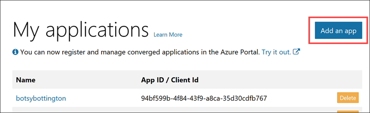The Add an app button is highlighted.
In the New Application Registration dialog, enter tech-immersion-vehicle into the Name field, then select Create application.
The New Application Registration dialog is displayed.
After a moment, your application will be created and its properties will be displayed. Select Generate New Password underneath the Application Secrets section.
The Generate New Password button is highlighted.
When the “New password generated” dialog appears, copy and paste your password to Notepad or similar text application for future reference. This will be the only time you see this password. Select OK.
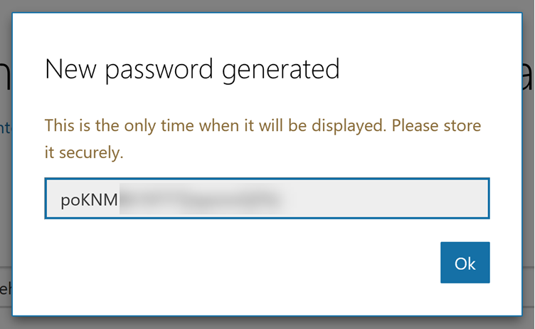The new password is displayed.
Copy and paste the Application Id value to Notepad or a similar text application for later steps.
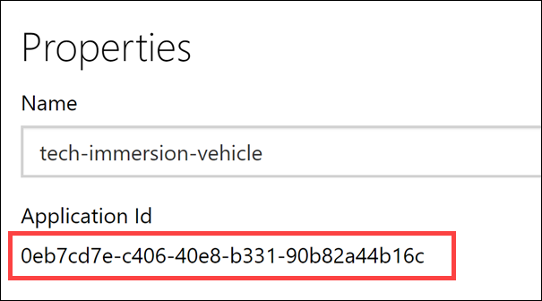The Application Id is highlighted.
Task 3: Deployment
The Virtual Assistant automotive bot requires the following Azure dependencies for end to end operation:
Azure Web App (hosts the bot when published)
Azure Storage Account (stores all chat transcripts)
Azure Application Insights (captures bot and related services telemetry)
Azure Cosmos DB (maintains the state of all conversations)
Azure Cognitive Services - Language Understanding (LUIS)
In this task, you will deploy all of these Azure dependencies as well as configure and train LUIS with thousands of text entries. We supply a script to do this for you.
On the bottom-left corner of your Windows desktop, locate the search box next to the Start Menu. Type cmd, then either press Enter or select the Command Prompt desktop app in the search results.
The search box has “cmd” entered into it and the desktop app is highlighted in the results.
The first thing you need to do is to log in to the Azure CLI with your provided account credentials. To do that, copy and paste the command below into the command prompt, then hit Enter. This will open a web browser window where you will sign in with the provided Azure Active Directory credentials for this experience.
az login
After logging in, you may be shown that you have more than one Azure subscription associated with your account.
The az login command is shown.
Copy and paste the command below into the command prompt Replacing YOUR_SUBSCRIPTION_ID with the Azure Subscription ID provided to your for this experience, then hit Enter:
az account set --subscription YOUR_SUBSCRIPTION_ID
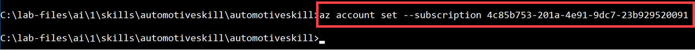Screenshot of the command to set the account.
Copy and paste the command below into the command prompt, then hit Enter. This will change directories to the Virtual Assistant automotive bot project folder:
cd C:\lab-files\ai\1\skills\automotiveskill\automotiveskill
This next command requires two of your custom values you saved in the previous task when you registered your Azure App. Copy the command below and paste it into Notepad or other text editor. Replace YOUR-APP-ID with the Azure App’s Application Id value, and replace YOUR-APP-SECRET with the App secret you copied. Make certain that your app secret value is surrounded by double quotes (").
Copy and paste your edited command into the command prompt, then hit Enter. Supply the following values when prompted:
name: Enter your unique Resource Group name provided to you for this lab. Example: tech-immersion-YOUR_UNIQUE_IDENTIFIER. It should exactly match your Resource Group name, be all lower case, contain no spaces and no special characters except for dashes (-) and underscores (_).
location: Enter westus.
luisAuthoringKey: Paste the LUIS Authoring Key you copied at the end of Task 1 above.
The bot creation script and parameters are highlighted.
This script will take around 10 minutes to run. Important: Keep the window open. There is a value you will need to copy once it is complete. For now, please move on to the next task.
Task 4: Load and explore the automotive Virtual Assistant starter solution
To accelerate Contoso Auto’s development efforts, they have decided to use Microsoft’s Virtual Assistant Solution accelerator. One of the projects included in the Visual Studio solution is the Automotive Skill. This skill demonstrates a set of capabilities to help enable Automotive scenarios. At the moment, this skill focuses on vehicle settings, specifically climate Control, safety, and basic audio controls.
Vehicle Control is a complicated problem. Although there are only a limited set of car inputs for climate control there are a large number of ways that a human can describe a given setting. For example, “I’m feeling chilly”, “My feet are cold”, and “It’s cold here in the back” all relate to a decrease in temperature but to different parts of the car and perhaps even different fan settings. If you were to program the bot to try and account for all of these variations in user requests, you would have a very long set of conditional logic in your code, and likely miss some common phrases in the process.
This is where having a trained natural language machine learning model comes in handy. Microsoft’s Language Understanding (LUIS) API service allows you to train this type of machine learning model (LUIS models) through configuration, with no programming or data scientists required. This results in allowing end users to use conversational, natural language text to issue commands whose overall meaning are predicted by LUIS and whose relevant and detailed information is used by the bot to perform actions related to the requests.
The LUIS model begins with categories of user intentions called intents. Each intent needs examples of user utterances (something a user should say). Each utterance can provide a variety of data that needs to be extracted with entities.
Here are some examples of user utterances the LUIS models for the Automotive skill are trained to understand:
Example user utterance
Intent
Entities
“Why is it so hot in here?”
VEHICLE_SETTINGS_DECLARATIVE
VALUE
“Set temperature to 67degrees”
VEHICLE_SETTINGS_CHANGE
SETTING, AMOUNT, UNIT
“It’s way too loud in here.”
VEHICLE_SETTINGS_DECLARATIVE
VALUE
LUIS models help understand the intent and entities, then matches potential settings and actions to the available vehicle settings to then suggest a course of action. At this time, changes to vehicle settings are supported through the VEHICLE_SETTINGS_CHANGE and VEHICLE_SETTINGS_DECLARATIVE intents. The former enables commands such as “change the temperature to 27 degrees” whereas the latter intent enables scenarios such as “I’m feeling cold” which require additional processing steps.
As you will see, most of this work is already done for you! Additional work that would need to be done to integrate this bot into a vehicle includes customizing the bot’s activities to integrate with the telematics solution of an OEM for a given vehicle.
For now, let’s explore how this bot is created and how LUIS is trained with the sets of utterances, intents, and entities as described.
Open Windows Explorer and navigate to C:\lab-files\ai\1. Double-click on VirtualAssistant.sln to open the solution in Visual Studio. If you are prompted by Visual Studio to log in, log in with your Azure Active Directory credentials you are using for this lab.
The VirtualAssistant.sln file is highlighted in Windows Explorer.
The Visual Studio solution contains the following:
Skills solution folder containing various skills projects that work with the Virtual Assistant.
AutomotiveSkill folder contains the Automotive skill you are deploying, as well as its test project.
CalendarSkill folder contains the Calendar skill that enables the Virtual Assistant to help users manage their connected O365 calendar.
EmailSkill folder contains the Email skill that enables the Virtual Assistant to help users manage their connected email account.
PointsOfInterestSkill folder contains the Points of Interest skill that provides point of interest and navigation-related capabilities to the Virtual Assistant. It does this through integrations with Azure Maps and Foursquare.
ToDoSkill folder contains the ToDo skill, adding these capabilities to the Virtual Assistant.
Test solution folder containing test projects for the Microsoft.Bot.Solutions common library and the VirtualAssistant project.
Microsoft.Bot.Solutions project produces a common library that all skill projects use as a basis for creating new skills, and various activities such as authentication, creating bot dialogs, showing user prompts, sending telemetry, and running tests.
VirtualAssistant project is used to develop and deploy the Virtual Assistant bot. It is configured with the Calendar, Email, ToDO, and Points of Interest skills by default. It is possible to integrate the Automotive skill as well, but that skill was meant to be standalone.
The solution projects are displayed within the Solution Explorer.
You will see the projects listed within the Solution Explorer in Visual Studio. Scroll to the bottom of the projects list and expand the VirtualAssistant project. Next, expand CognitiveModels, then expand LUIS. Underneath the LUIS subfolder are additional subfolders for each language. Expand en. Next, double-click on general.lu.
Screenshot of the Solution Explorer.
Here is just a small snippet of the general.lu file:
This file contains general commands used to train LUIS. These commands are common across all skills, like the Automotive skill. Therefore, when you publish a skill, not only will the skills load LUIS models that are unique to that skill, they will also load the general ones.
.lu files contain simple text-based definitions for LUIS, broken down by Intents (the action the user wants to perform) and Entities (detailed information that is relevant in the utterance). In the code snippet above, SelectItem is the intent, and each item below it are example utterances that capture ways users can express this intent. Entities in .lu files are denoted using {<entityName>=<labeled value>} notation. Taking from our sample code once again, you can find the bottom left entity within the following utterance: choose the {DirectionalReference=bottom left}.
When you ran the script earlier, one of the actions it took was to convert all of the .lu files into JSON files by using the LUDown tool. The converted JSON files were then uploaded to LUIS to train the natural language model. You can find the generated JSON files within the DeploymentScripts\en\ folder as .luis files. This is a faster and more repeatable alternative to manually configuring LUIS through the web interface.
Scroll up the list of projects in the Solution Explorer, then expand the AutomotiveSkill project located under the Skills\AutomotiveSkill solution folder. Next, expand the CognitiveModels\LUIS\en folders, then double-click on settings_dispatch.lu.
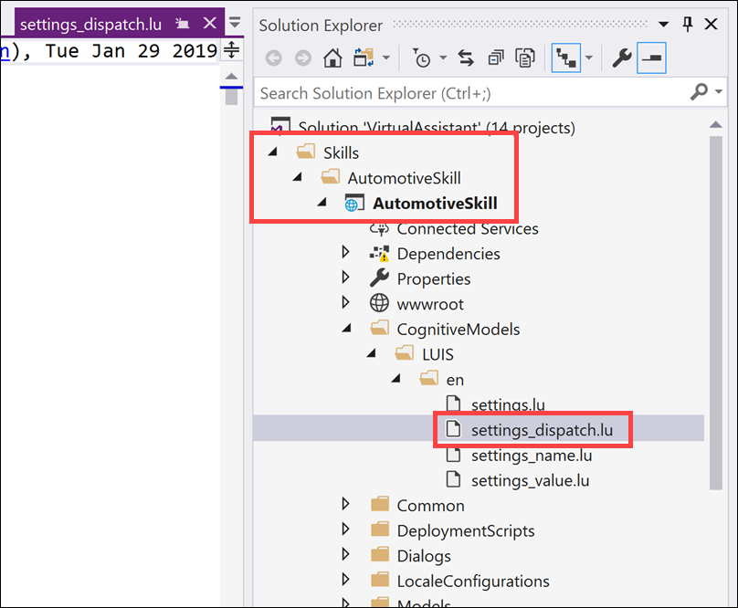Screenshot of the Solution Explorer.
This .lu file contains LUIS intents and entities specific to the Automotive skill. If you scroll through the list, you will see the VEHICLE_SETTINGS_CHANGE and VEHICLE_SETTINGS_DECLARATIVE intents that were illustrated above in the example user utterances table.
You will also find these top-level intents in the main settings.lu file. In addition, there are two supporting LUIS models, settings_name and settings_value. These are used for disambiguation scenarios to clarify setting names and values where the initial utterance doesn’t provide clear information.
Now expand the DeploymentScripts folder located within the AutomotiveSkill project.
Screenshot of the Solution Explorer.
This folder contains the deploy_bot.ps1 deployment script you executed in the previous task. It also contains scripts used to generate deployment scripts to publish your bot to Azure, and a script to update your published models if you add or update any of the .lu files. The en folder contains the generated JSON LUIS files (.luis). You may not see these yet, depending on whether the script is finished running.
The bot.recipe files are used as a template for creating the .bot files that the script generates.
Next, expand the Dialogs folder located within the AutomotiveSkill project.
Screenshot of the Solution Explorer.
When you create bots using the Bot Framework, you can use dialogs to model a conversation and manage conversation flow. A conversation can involve multiple dialogs. In the case of the Automotive skill, the conversation may start within the Main dialog, then use the AutomotiveSkillDialog to handle and display inputs and prompts relating to actions the user would like to take. When the user decides to change a vehicle setting, the VehicleSettingsDialog will be used. You may feel free to explore these dialogs to understand how the conversation flow is managed.
Available vehicle settings are defined in a supporting metadata file located here automotiveskill\Dialogs\VehicleSettings\Resources\available_settings.json.
To add an new setting along with appropriate setting values, it’s easily expressed in JSON. The example below shows a new Volume control setting with the ability to Set, Increase, Decrease and Mute the volume.
For key settings, you may wish to prompt for confirmation, such as safety settings. This can be specified through a requiresConfirmation property as shown below.
Speech & Text responses are stored in the VehicleSettingsResponses.json file. Responses files offer the ability to provide a variety of responses and set the input hint on each Activity. Example:
Task 5: Open the generated bot file in the Bot Framework Emulator
Bots developed using the Bot Framework can be tested locally, using the Bot Framework Emulator. This emulator can be used with local .bot files or be used to test remote, or hosted, bots. Being able to test in this way saves the time needed to deploy your bot and test it using other channels, such as through a web chat dialog, Facebook, Skype, Slack, etc.
Bots usually consume lots of different services, such as LUIS.ai. When you are developing a bot, there is no uniform place to store the metadata about the services that are in use. This prevents us from building tooling that looks at a bot as a whole.
To address this problem, we have created a .bot file to act as the place to bring all service references together in one place to enable tooling. For example, the Bot Framework Emulator uses a the .bot file to create a unified view over the connected services your bot consumes.
.bot file is not a requirement to build bots with the Bot Builder SDK. You can instead continue to use appsettings/ web.config/ env, KeyVault, or any mechanism you see fit to keep track of service references and keys that your bot depend on.
The advantages of using .bot file are:
Bot Builder V4 SDK will be available in 4 platforms x languages – C#, JS, Python, Java. Each platform have their recommended way of keeping track of keys + env settings (appsettings.json, web.config, .env …).
Elegant tooling solutions around services creation and management is harder without a well defined schema (.bot file).
Bot Framework Emulator and CLI tools rely on and work great with tracking connected services in a consistent format (in a .bot file)
In this task, you will open the generated .bot file in the Bot Framework Emulator and start testing out your bot! First, we need to make sure the script is finished running. This must be completed before continuing with this experience.
Switch back to your Command Prompt (console) window to make sure the script has successfully finished. If it has, scroll up until you see where you input the name, location, and luisAuthoringKey values. A few lines below that section will be the bot file secret in purple, underneath a line that says The secret used to decrypt <YOUR-BOT-NAME>.bot is:. Copy the bot file secret and save it to Notepad or similar text application.
You must copy this secret now because it will not be displayed again!
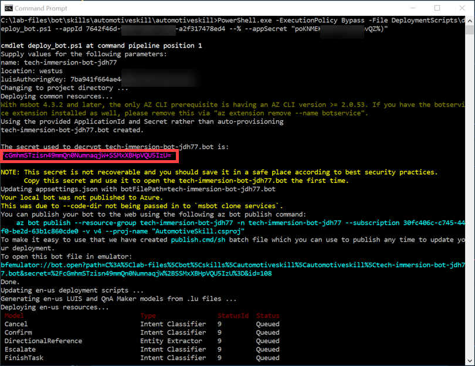The bot file secret is highlighted.
Now we are ready to test the bot. Before testing, you must update the appsettings.json file in the AutomotiveSkills project. To do this, switch back to the solution in Visual Studio and expand the AutomotiveSkill project in the Solution Explorer. Double-click on the appsettings.json file to open it.
Confirm that your bot creation script has finished executing before proceeding. Update your appsettings.json file with the newly created .bot file name and .bot file secret. The .bot file is located in the root directory of the AutomotiveSkill project. Most likely, the script that you ran already added the bot file name for you. Example: tech-immersion-YOUR_UNIQUE_ID.bot.
Finally, add the .bot file paths for each of your language configurations (English only at this time). You can find the bot file under the LocaleConfigurations folder. Make sure that the bot file name ends with en.bot. For instance, tech-immersion-YOUR_UNIQUE_IDen.bot. ALso, make sure both botFilePath settings start with ./.
The last file change you need to make is to update the development endpoint setting within the .bot file located in the AutomotiveSkill root folder. There is a bug that currently exists which adds the appId and appPassword values of your Azure App to the development endpoint, which is meant to be run locally. If those values are present, the Bot Framework Emulator is not able to send messages to your bot when running it locally. To edit this file, double-click on the generated .bot file that is located in the root directory of the AutomotiveSkill project in the Visual Studio Solution Explorer.
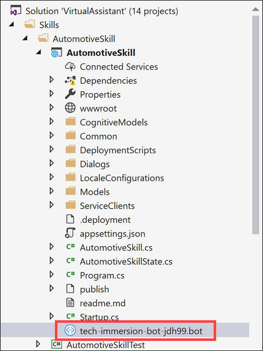The bot file is highlighted within the Solution Explorer.
Find the JSON code block with the type set to endpoint and the name set to development and clear out the appId and appPassword values. The edited result should look like the following:
Next, you must Debug the AutomotiveSkills project. To do this, right-click the AutomotiveSkills project in the Solution Explorer, then select Debug in the context menu, then Start new instance.
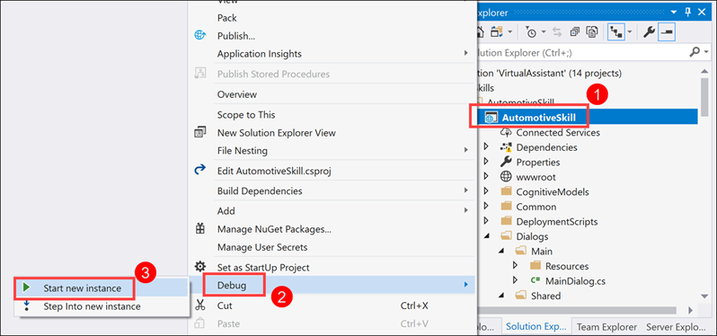The AutomotiveSkill project is highlighted, as well as the Debug and Start new instance sub-menu items.
After a few moments, a new web browser window will open, displaying web page with the message, “Your Enterprise Bot is ready!”. Leave this window open and continue to the next task.
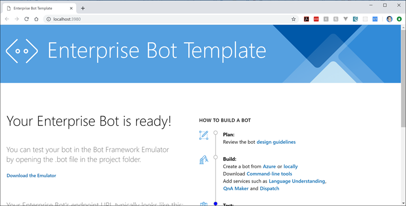The Enterprise Bot Template web page is displayed.
Oftentimes, the Bot Framework Emulator automatically launches after the bot file is created. If not, open it by clicking on the search box next to the Start Menu on the bottom-left corner of your Windows desktop. Type Bot Framework Emulator, then select the Bot Framework Emulator desktop app in the search results.
The search box has “Bot Framework Emulator” entered into it and the desktop app is highlighted in the results.
Within the Bot Framework Emulator window, click on Open Bot.
Th Open Bot button is highlighted on the Bot Framework Emulator home screen.
In the “Open a bot” dialog, click the Browse button to find the generated bot file.
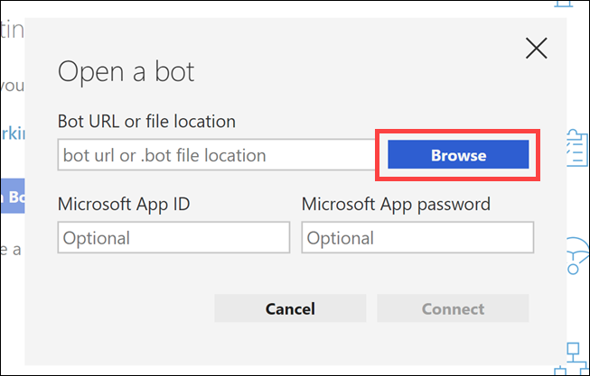The Browse button is highlighted.
Within the Open file browser, navigate to C:\lab-files\ai\1\skills\automotiveskill\automotiveskill, select your generated bot file, then click Open.
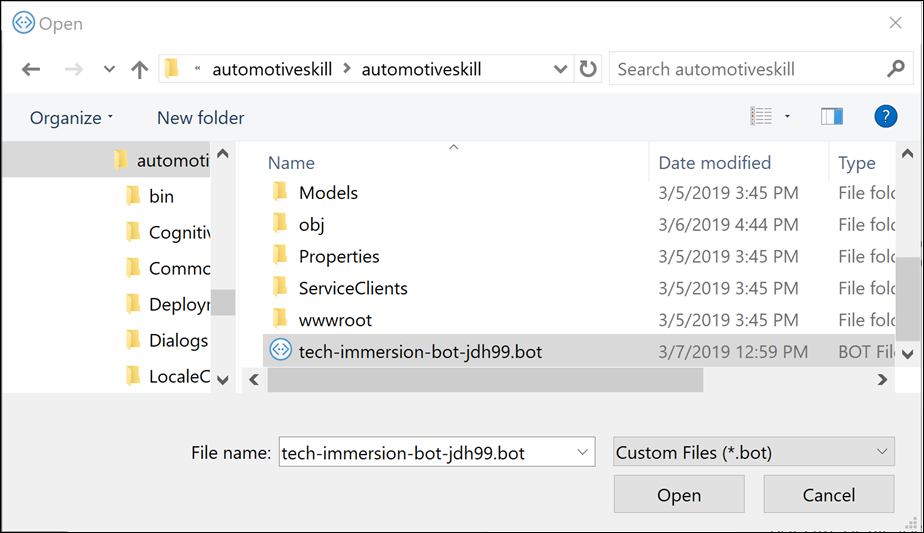The file browser is displayed.
You should see a dialog prompting you for your bot file secret. Paste the bot file secret you copied in Step 1 above, then click Submit.
The bot file secret dialog is displayed.
If after loading the bot file you see a blank screen for more than a few seconds, shut down and re-open the Bot Emulator.
Now you should see a Live Chat window with the following features:
Development endpoint: Make sure this endpoint is selected under endpoints to the left. You cannot use the production endpoint until you publish your bot.
Bot service path: This should display the path to your locally running bot (http://localhost:3980/api/messages). If not, select the development endpoint on the left.
Welcome message: The bot is configured to show a welcome message when the user first connects to it. This is controlled by the dialogs within the project that you explored. This area is where your chat history is displayed as well.
Send message box: Use this textbox to type in and send all of your messages to the bot.
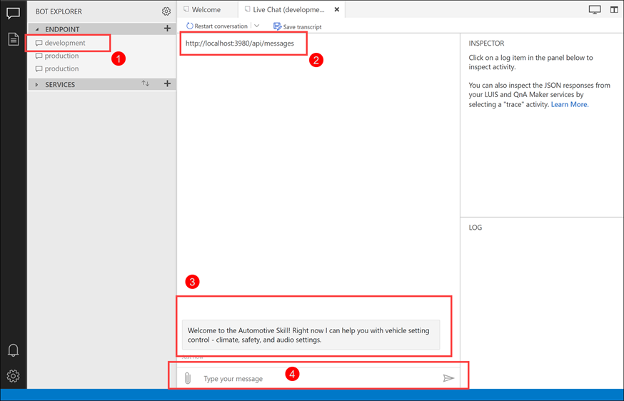The Live Chat window is displayed with each of the described features highlighted.
Type help and hit Enter. The bot will respond with a message and a list of suggested actions. Notice that the Log pane to the right lists both user input and bot response activities. You can click on any of the hyperlinks within the Log to view the activity details in the Inspector above. If you click on an item in the chat window, such as the help message you typed, you can inspect the data that was sent to the bot as well as the response. For now, click on the put the air on my feet, or type it in if you don’t see it as a suggested action.
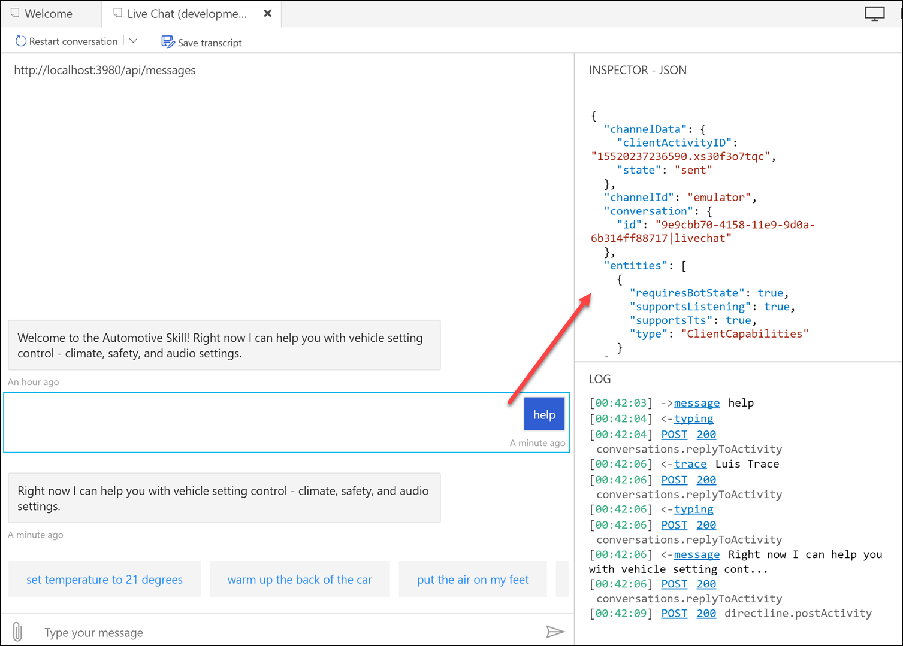The Live Chat window is displayed with various outputs.
The bot sent the put the air on my feet text to LUIS so that it could derive your intent and desired action. If you click on the LUIS trace message in the chat window, you should see the following in the Inspector pane:
To explain, the utterance is your text (located on the bottom): put the air on my feet. LUIS detected the intent as VEHICLE_SETTINGS_CHANGE (you should remember that one from earlier) with a score, or “confidence” level of 99%. It detected two entities, a SETTING of “air” with a value of “feet”. The “air” setting also had a high score of 99%, but the setting value of “feet” scored about 55%.
The result is that the bot must clarify the user’s intent by prompting for more information. To do this, the bot asks which of the two matching settings would you like to select? Since you did not explicitly say to turn the air on in the back of the car or the front of the car, you need to tell it which option you like. The bot displays a card for you to choose from. You may either click on one of the options, or type it in.
The Live Chat shows the bot’s prompt to choose which air control mode to use.
If you selected or typed in the Front Combined Air Delivery Mode Control option, you should see a response from the bot that says: Setting Front Combined Air Delivery Mode Control to Floor. The amazing thing that happened is that your original somewhat vague request to “put the air on my feet” ultimately resulted in the bot telling the vehicle to turn on the air in the front of the car to the floor setting, knowing that your feet are most likely located on the floor :)
The bot’s response to your selected action.
Now type a command that the bot would not understand, such as “make me a coffee”. The bot will respond with, “Sorry, I don’t know what setting you’re talking about.”
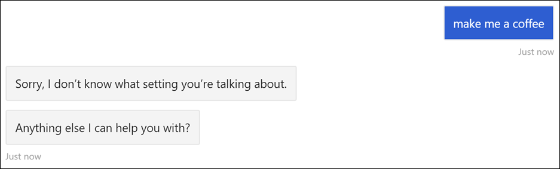The bot responded with it does not know what setting you are talking about.
So how did this happen? Remember, the Dialogs within the bot’s code controls the conversation flow. It first gets help from LUIS to decide what the user is trying to do. In this case the ProcessSetting method within the VehicleSettingsDialog.cs file is called and the LUIS result is evaluated to get the top (highest rated) intent.
Next, the topIntent’s value is evaluated in a switch statement to perform actions based on the value. In this case, it is determined that the intent type is VEHICLE_SETTINGS_DECLARATIVE. Next, some post-processing of the entities is performed as well as removing entities that don’t make sense (like “coffee”). After this processing and cleanup is done, there are no matching setting names, so we call SendActivityAsync with the VehicleSettingsResponses.VehicleSettingsMissingSettingName response.
Remember reading about the Speech & Text response files at the end of the previous Task? That’s what the VehicleSettingsResponses.VehicleSettingsMissingSettingName value was referring to. You can find the VehicleSettingsMissingSettingName response within the VehicleSettingsResponses.json file:
Now that you are starting to understand what is going on, try out the following commands to see how the bot responds:
Set temperature to 68 degrees
It’s feeling cold in the back
The passenger is freezing
temperature
Increase the volume
adjust the equalizer
The volume is too low
Task 6: Open LUIS to view the generated apps
If you recall, the bot deployment script created Azure services, generated a .bot file, and converted the .lu files to JSON files were uploaded to LUIS. Let’s take this new knowledge about how LUIS works and how the files are used to train it, and browse to the LUIS portal to explore the generated apps.
Navigate to the LUIS portal (www.luis.ai) and sign in if needed. You should see four new apps listed underneath My Apps, each of which start with the name of your bot. You can see by the Endpoint hits value which LUIS app gets used the most.
My Apps is displayed with a list of generated LUIS apps.
Open the app that ends with General. Select Intents under App Assets on the left-hand menu. Notice that each named intent has a number of labeled utterances. Remember, utterances are used to train LUIS on different ways a user may express their intent. Generally speaking, the more utterances you have, the more variety of ways LUIS can understand how people may type or speak a phrase.
The list of General intents.
Select the Cancel intent.
You may use the navigation controls on the bottom of the list to look through the utterances for this intent. If you click on a word, you will see an option to assign an entity to that word. We’ll take a look at an utterance with an entity in a bit to see what that looks like.
Screenshot of the Cancel intent.
Select My apps in the top menu. Now open the app that ends with **_settings**.
My Apps is displayed with the settings app highlighted.
As you can see, this app’s intents have a much larger number of labeled utterances. Select VEHICLE_SETTINGS_DECLARATIVE.
The settings app’s intents are listed.
As you can see, these utterances are a bit more descriptive and contain one or more SETTING and/or VALUE entities. When you hover over an entity, you can see a sample value. Feel free to explore the other entities.
The declarative intent is shown.
Select Entities on the left-hand menu. The list of entities shows the number of times each is used within an utterance. If you click on an entity, you can browse through the list of utterances in which it is used.
The list of entities is displayed.
Select Dashboard on the top menu to view statistics about this app. The top of the dashboard displays app state information, like the status and number of labeled utterances.
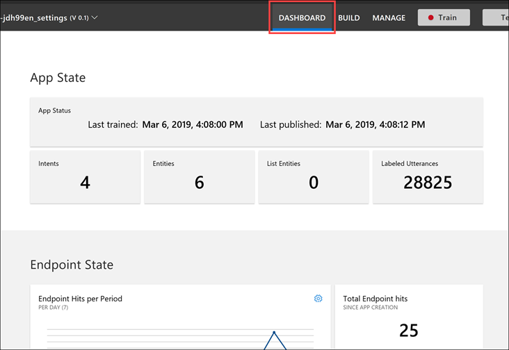The top of the dashboard is displayed and the Dashboard menu item is highlighted.
When you scroll further down, you will see the Endpoint State section, which gives you a sense of how much the endpoint is being used and when.
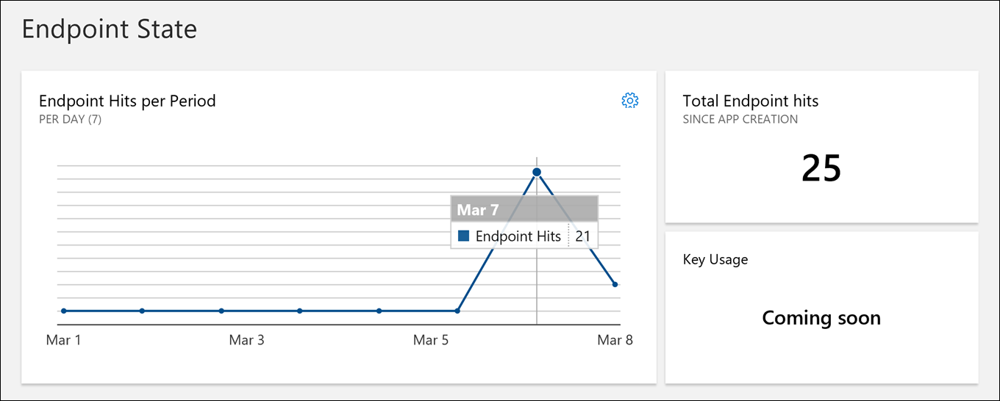The Endpoint State section of the Dashboard is shown.
The bottom of the dashboard shows detailed model view charts with the intent and entity breakdowns by utterance. This can give you an idea of which intents and entities are used in the most utterances. Hover over any section of the chart to view its label.
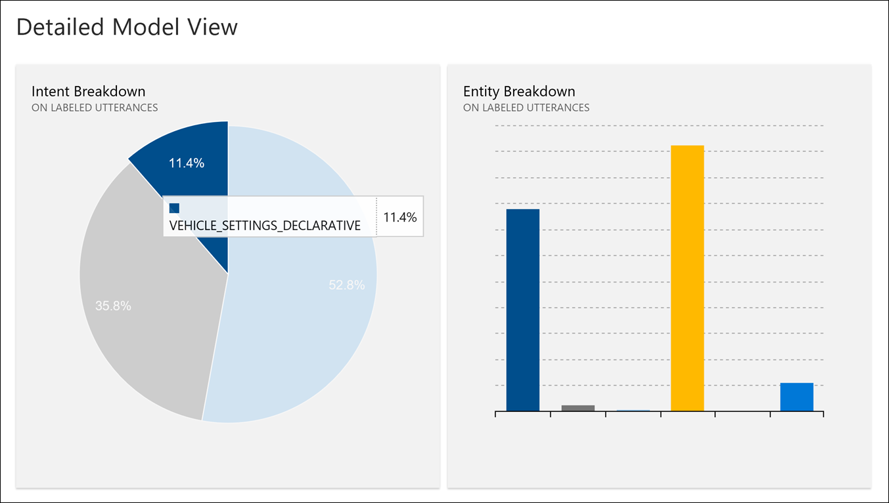The Detailed Model View of the Dashboard id shown.
Wrap-up
Thank you for participating in the Bot solutions experience! We hope that you are excited about how you can use the Virtual Assistant Solution Accelerator alongside our bot services to create some interesting solutions of your own. Please feel free to refer back to this experience at any time to learn more about the solution accelerator, LUIS, and other Azure services that make these capabilities shine.
To recap, you experienced:
How to quickly get started with LUIS to add natural language processing to your solutions.
Using the deployment scripts that come with the Virtual Assistant Solution Accelerator to create all of the Azure resources for you, as well as to train LUIS with thousands of text entries.
Exploring the Virtual Assistant starter solution, learning how things are laid out, which skills are included, and where to make modifications to the Automotive Skill if needed.
Using the Bot Framework Emulator to test your bot locally and examine the data being sent back and forth between your bot and its related services.
Exploring LUIS to see how intents, entities, and utterances are stored and relate to one another.
Viewing usage reports in LUIS to see how users are sending commands and how those commands translate to the most-used intents and entities, giving you insight into where to make improvements.
Additional resources and more information
The Virtual Assistant solution accelerator is a great starting point for adding many new skills or updating existing ones to your bot. To address some of Contoso Auto’s requirements, you may consider doing the following:
Contoso Auto wants to have the bot proactively alert the driver when there is a potential problem with the vehicle, which it detects by monitoring vehicle sensor data. Right now, the Automotive skill bot is exclusively reactive (user-initiated). However, you can proactively send messages that are triggered by external events by using a combination of the Bot Framework’s ContinueConversationAsync function to patch into a previously started conversation, and the ProactiveStateMiddleware to store the previous conversation. Read more about sending proactive messages.
One of the experiences in this set of labs is to train a machine learning model to detect when a driver might have to change out the vehicle’s battery, based on telemetry captured and stored for a given vehicle. Using Azure Machine Learning, you can manage and deploy that trained model either as a service hosted online, or on an edge device, such as IoT Edge. An edge device would be the onboard computer that hosts the Automotive bot that interfaces with the vehicle’s telematics solution to read sensor data and perform other vehicle functions. Your bot would need to be configured to either work with the machine learning model that’s stored locally, or connect to the hosted machine learning model online. If you are going the online route, you would likely want to have an API layer between the onboard bot and the model. Azure Functions may be ideal for acting as the API, with API Management serving as the API layer, providing a set of endpoints for multiple APIs, authentication services, rate-limiting, etc. Your function would accept the scoring request from the bot to check for any concerns about the vehicle based on telemetry data, and call out to this and other trained machine learning models for a prediction. It would then send a proactive message to the bot. The bot could then alert the user if needed, and ask the user for an action. Such an action would be to find the nearest service center to set up an appointment. At this point, you could use the Points of Interest skill to find the nearest service center and get directions or contact information. The possibilities are nearly limitless on how you can add new capabilities to the bot.